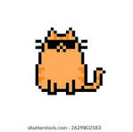

Kneading
When cats press their paws into a soft blanket or lap, it is called kneading. Many cats do this when they feel comfortable.
Cats communicate with body language, sound, scent, and movement. Understanding those signals makes it easier to care for them.

A relaxed cat may blink slowly, hold its tail calmly, or stretch out. A worried cat may flatten its ears, tuck its tail, hide, hiss, or try to leave.
One of the best ways to be kind to a cat is to give it space when it asks for space.
When cats press their paws into a soft blanket or lap, it is called kneading. Many cats do this when they feel comfortable.
Scratching helps cats stretch, mark territory, and keep their claws healthy. A scratching post gives them a better target than furniture.
A slow blink can be a relaxed, friendly signal. Try blinking slowly back at a calm cat.